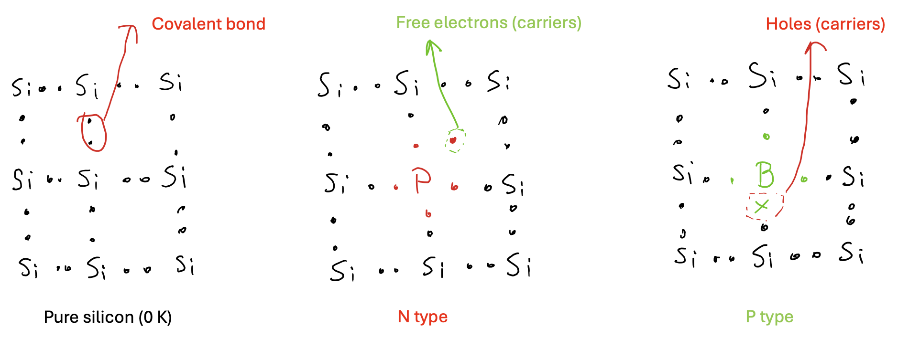
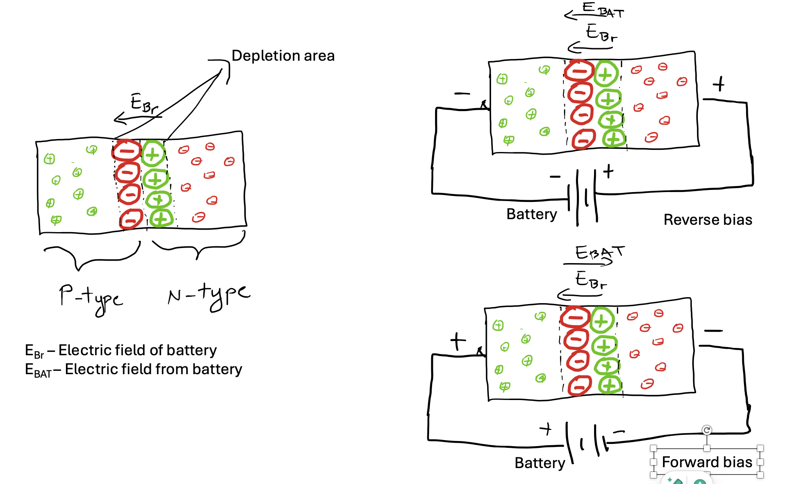
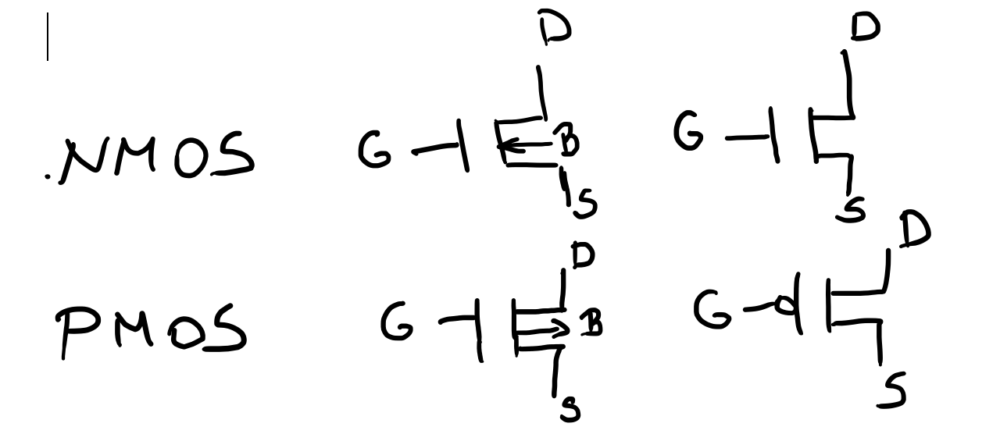
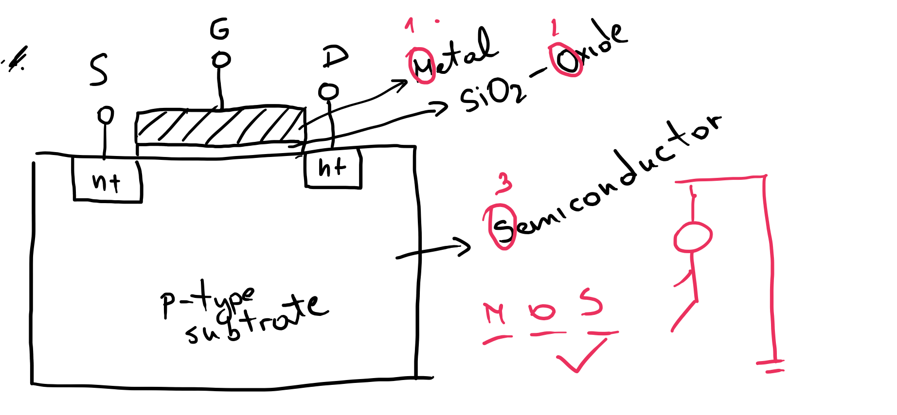
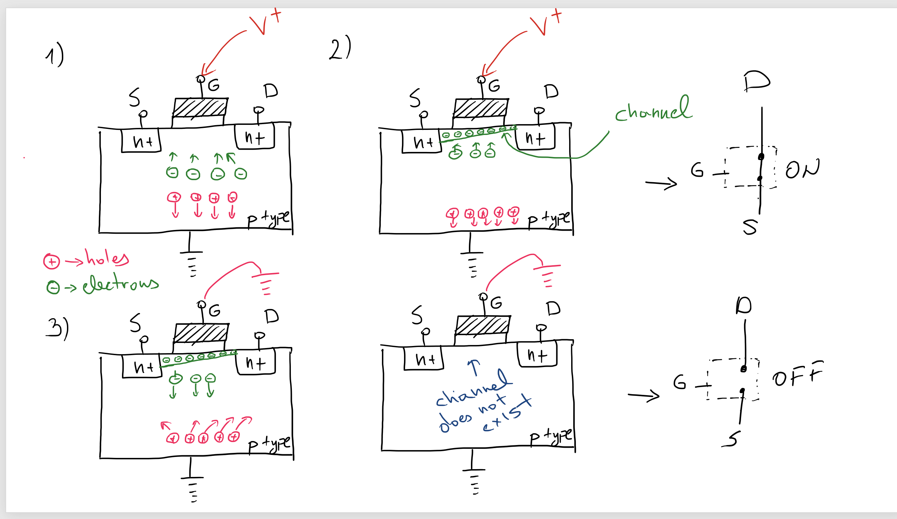
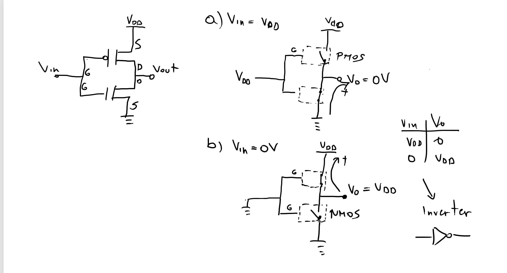
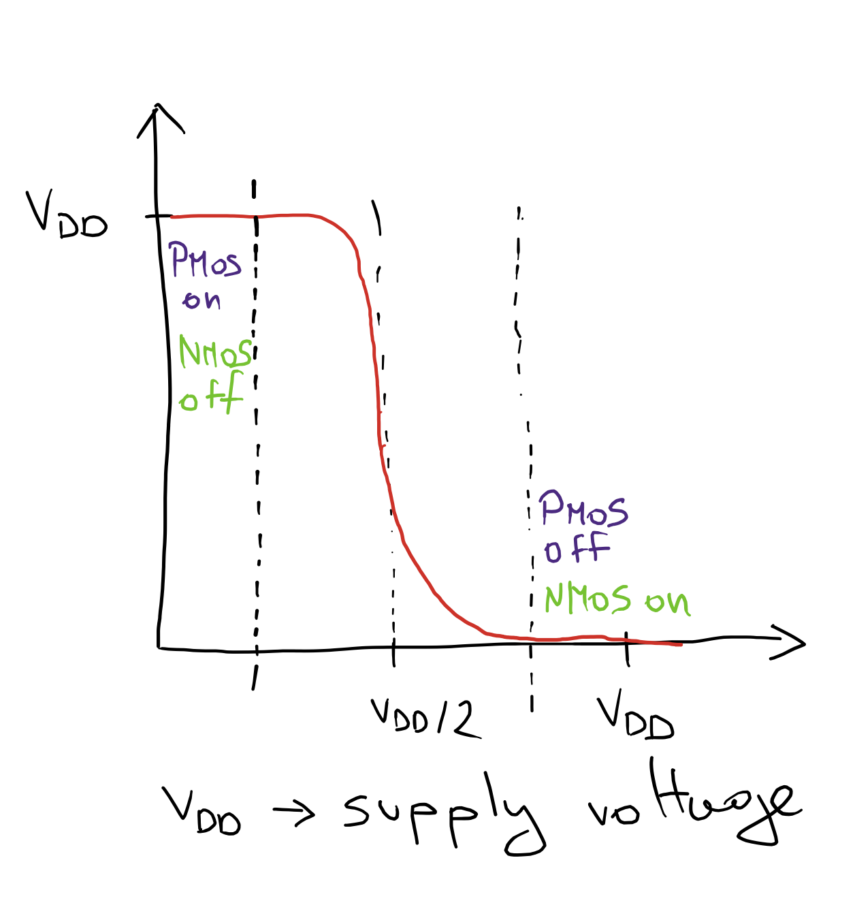
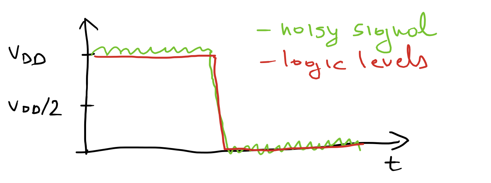
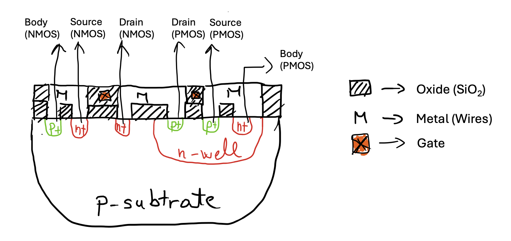

1 Introduction to Digital Design
Introduction to Digital Design
1.1 Goal for this week
- See why the P-N junction’s one-way conduction is the basic building block behind every diode and every transistor
- Follow how a MOSFET’s gate voltage creates, and destroys, a conducting channel between source and drain, turning it into a voltage-controlled switch
- Build the CMOS inverter from one NMOS and one PMOS, and see why that pairing is what gives CMOS its low static power
- Separate static and dynamic power, and see which design choices trade one for the other
- Connect the transistor-level picture to the chip-level one: how NMOS and PMOS actually end up side by side on the same piece of silicon, and roughly how a wafer becomes a chip
1.2 The P-N junction

One of the fundamental facts of solid-state electronics is how a P-N junction behaves. On its own, pure silicon is a poor conductor. We fix that through doping, deliberately introducing a small number of impurity atoms into the silicon lattice to change how many free charge carriers it has. Dope silicon with an element that has more valence electrons than silicon, such as phosphorus or arsenic, and the extra electrons become free carriers. We call the result n-type silicon, “n” for the negative charge of its majority carrier. Dope it instead with an element that has fewer valence electrons, such as boron or gallium, and the missing electron leaves behind a “hole”, a position that behaves like a mobile positive charge. We call that p-type silicon.
Bring a block of n-type and a block of p-type silicon into contact, and the junction between them behaves in a way neither material does alone. Current flows easily in one direction, forward bias, and is almost completely blocked in the other, reverse bias. This one-way behavior is not a separate property we add. It falls directly out of how charge moves across the junction, and it is the basic mechanism behind every diode, and in turn, every transistor we build in this course.
1.2.1 The depletion region

Right at the junction, free electrons from the n-side and free holes from the p-side meet and recombine, leaving behind a thin region with no free carriers at all. We call this the depletion region. What is left behind there is not neutral. It is the fixed, immobile dopant ions that donated those carriers in the first place, and those fixed charges set up an electric field across the depletion region, pointing from the n-side toward the p-side.
1.2.1.1 Equilibrium
With no external voltage applied, that built-in field reaches a balance point. It is strong enough to stop any further electrons or holes from diffusing across the junction, but no stronger. We call this the equilibrium state. Electrically, it behaves like a small built-in barrier, often called the Coulomb barrier, that a carrier has to overcome before it can cross from one side to the other.
1.2.1.2 Reverse bias
Apply an external voltage with its positive terminal on the n-side, and that external field points the same way as the junction’s built-in field. The two add together, the depletion region widens, and the barrier an electron would need to cross gets taller, not shorter. For current to flow at all, electrons from the n-side would have to reach the junction and recombine with holes on the p-side, and a reverse-biased junction actively drives electrons away from the junction instead. The result is that almost no current flows.
1.2.1.3 Forward bias
Flip the polarity, and the external field now opposes the built-in field instead of reinforcing it. The depletion region shrinks, the Coulomb barrier collapses, and carriers can cross the junction with very little resistance. This is forward bias, and it is the conducting state of a diode.
1.3 CMOS technology
Complementary Metal-Oxide-Semiconductor (CMOS) technology is, practically speaking, unavoidable in digital design. It builds every logic function from paired n-type and p-type MOSFETs, and that pairing is what lets it combine very low static power with high noise immunity and fast switching, all at once. That combination is exactly what large-scale integration needs, whether that means a battery-powered microcontroller or the millions of logic gates on a modern microprocessor. Every digital building block we design in this course, down to the CLB we met in the FPGA fabric, ultimately bottoms out in CMOS transistors like the ones in this chapter.
1.3.1 MOSFET transistors

We will mostly use the MOSFET as a switch, though it can also amplify signals. At first glance it looks like a four-terminal device: gate, source, drain, and body. A voltage on the gate decides whether, and how strongly, current can flow between source and drain. The body terminal shifts the device’s voltage-current characteristics and is normally just tied to a fixed supply rail, which is why many schematic symbols leave it out and show only three terminals.
The name spells out what the device is built from. “Metal-Oxide- Semiconductor” describes its physical structure. “Field-Effect Transistor” describes how it works: an electric field, not a direct physical connection, controls the current.

We illustrate an NMOS. Its gate is a metal layer separated from the p-type substrate beneath it by a thin oxide layer, which insulates the gate and prevents any DC current from flowing into it. Source and drain are both n+ regions embedded directly in that p-type substrate. The names describe their role in conduction: the source supplies the charge carriers, electrons for an n-channel device and holes for a p-channel one, that flow through the channel, and the drain is where those carriers leave it.

To turn an NMOS on, we apply a positive voltage to the gate. That voltage attracts electrons from the p-type substrate toward the surface and pushes holes downward and away, purely through the electric field it creates, which is exactly what makes this a field-effect transistor. Once enough electrons have gathered at the surface, they form a bridge, the channel, connecting source and drain, and current can flow between them. How long that channel is, geometrically, is a property of the fabrication technology used.
In effect, the MOS transistor behaves as a controlled switch. Take the voltage off the gate, and the electrons no longer have anywhere to stay. The channel dissolves, and the connection between drain and source opens back up.
1.3.2 Complementary MOS

A CMOS gate pairs an NMOS and a PMOS transistor that share a common gate input. We already know how to turn an NMOS on, and a PMOS is its mirror image: it turns on when the gate is low rather than high. Tie a positive voltage to the shared gate, and the NMOS turns on while the PMOS turns off, pulling the output down to ground. Tie the gate to ground instead, and the PMOS turns on while the NMOS turns off, pulling the output up to VDD. In both cases, exactly one of the two transistors conducts, never both, and the output ends up at the opposite logic level from the input. That is an inverter, and it is the simplest possible CMOS gate.
1.4 CMOS characteristics
1.4.1 Transfer function

The transfer function shows how the output voltage depends on the input voltage. For a CMOS inverter, it is almost a step function. For a wide range of low inputs, the PMOS is on and the NMOS is off, and the output sits close to VDD. For a wide range of high inputs, the roles reverse and the output sits close to ground. Only in a narrow band around VDD/2 do both transistors conduct at once, and the output swings sharply from one rail to the other. That sharp transition is exactly what we want from a digital gate. It is what keeps a “1” looking like a clean 1 and a “0” looking like a clean 0, right up until the input crosses the switching threshold.
1.4.2 Noise margins

Because the transfer function stays flat near VDD and near ground across most of the input range, a CMOS gate tolerates a surprising amount of noise. A signal can pick up noise from neighboring wires or supply fluctuations and still be read correctly, as long as that noise does not push the voltage past the switching threshold in the middle of the transfer function. This margin between “close enough to a clean logic level” and “close enough to flip the gate’s decision” is the noise margin, and CMOS’s wide noise margins are one of the main reasons it dominates digital design.
1.4.3 Power
CMOS technology is known for its low power consumption, which is one of its biggest advantages over older logic families. We split that power consumption into two categories: static power and dynamic power.
Static power (also called leakage power) is what the circuit consumes while it is not switching at all. It comes mostly from small leakage currents through transistors that are nominally off, and it becomes a much bigger concern as transistor geometries shrink.
Dynamic power is what the circuit consumes while it is actively switching. Every time a gate’s output toggles, we have to charge or discharge its load capacitance, and that costs energy. We can express the dynamic power of a single node as
\[P_{dynamic} = \alpha C V^2 f\]
where \(\alpha\) is the activity factor (the fraction of clock cycles in which the node actually switches), \(C\) is the load capacitance, \(V\) is the supply voltage, and \(f\) is the switching frequency.
1.4.4 Dynamic behavior
A CMOS gate does not switch instantaneously. To change its output, it first has to charge the load capacitance, when the output rises, or discharge it, when the output falls. That load capacitance is not one single thing. It is the sum of the input capacitance of every gate the output drives, the capacitance of the interconnect wiring between them, and the capacitance of the reverse-biased P-N junctions inside the transistors themselves. To make a gate switch faster, we have a few levers: raise the supply voltage, widen the transistor’s channel width-to-length ratio, or simply drive fewer downstream gates from the same output.
1.5 Manufacturing CMOS integrated circuits

Building CMOS means putting NMOS and PMOS transistors on the very same piece of silicon, even though an NMOS wants a p-type substrate and a PMOS wants an n-type one. The usual solution is an n-well: a pocket of n-type silicon diffused into the p-type substrate, deep enough to host a complete PMOS transistor, source, drain, and body, while the NMOS transistors around it sit directly in the surrounding p-type substrate as before. Everything above that, the oxide layers and the metal wiring that connects the transistors into actual logic gates, is built in the same set of process steps for both transistor types.
1.5.1 Photolithography process
Turning a bare silicon wafer into a working chip is a repeated pattern of deposit, pattern, and etch, applied layer by layer. It starts with the wafer itself, onto which we grow a thin layer of silicon dioxide (SiO2) through oxidation. On top of that, we spin on a photoresist, a light-sensitive polymer. By default we use a negative resist, which becomes soluble wherever light hits it, though a positive resist, which behaves the opposite way, is also an option depending on the process.
Next comes the stepper exposure. A glass mask carrying the pattern for this layer is brought close to the wafer. Its opaque regions block UV light, and its transparent regions let it through, exposing the resist beneath in exactly the shape we want to process. After exposure, we develop and bake the wafer: an acid or base solution washes away the soluble part of the resist, and baking hardens what is left into a solid protective mask.
With that mask in place, acid etching removes material, typically the oxide layer, wherever the resist is not protecting it. A spin, rinse, and dry step cleans the wafer before whatever comes next, whether that is another masked layer or a different process step entirely. Once a layer is finished, we strip away the remaining photoresist, and the wafer is ready for the next pass through this same cycle, one layer at a time, until the full set of transistors and interconnect is complete.